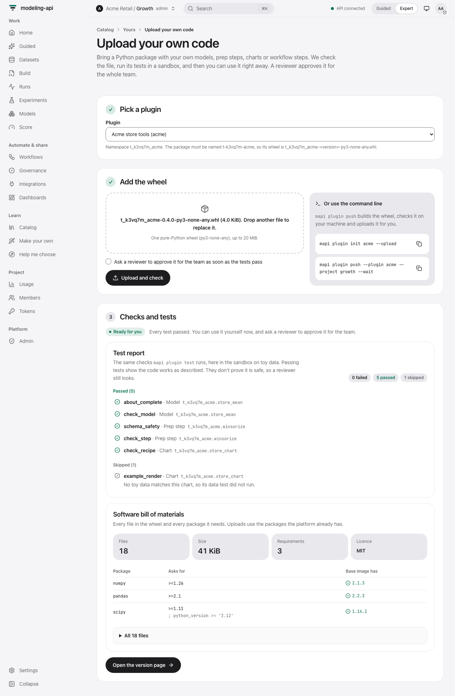
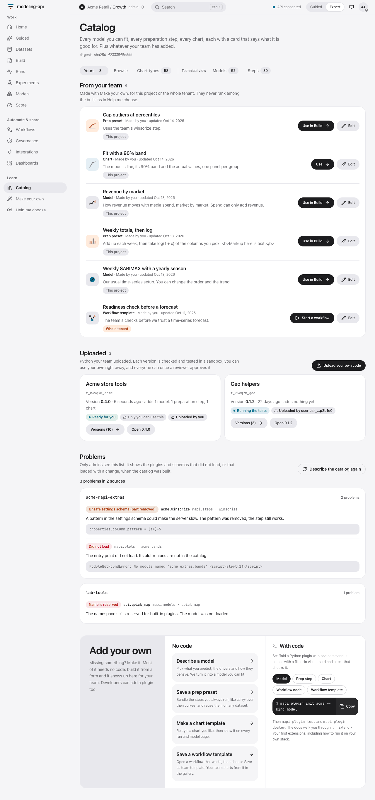

Got a model, a prep step or a chart in Python that the catalog doesn't have? From v0.19 you can upload it to your workspace. You don't need to run a stack or ask an operator to build an image. The platform checks your wheel in its sandbox and runs the contract kits on it. Then you can use it yourself straight away. When a second admin of your workspace approves it, everyone in the workspace can use it too.
This page walks you through it, from an empty folder to an approved plugin in Build. It takes about fifteen minutes. If you review uploads for your team, read Review uploaded code as well.
flowchart LR
A["mapi plugin init --upload"] --> B["mapi plugin push"]
B --> C{"Checking the files"}
C -- refused --> R["Refused: fix and push again"]
C --> D{"Running the tests"}
D -- failed --> F["Tests failed: fix and push again"]
D --> E["Ready for you<br/>(only you)"]
E --> G["Waiting for a reviewer"]
G --> H["Approved for the team"]
G --> J["Not approved"]Before you start¶
- Who can upload. A tenant admin, or an editor that a tenant admin confirmed as an uploader (Settings › Workspace › Uploaded code › Who can upload). Ask an admin if you are not sure.
- Which workspaces. Internal and self-hosted workspaces can upload. A verified workspace can upload when its identity verification is done. Public workspaces can't upload code.
- Where it runs. Uploaded code runs only on a sandboxed executor (Docker, Docker with
gVisor or Cloud Run). If your deployment has none, the upload stops with
UNTRUSTED_PLACEMENT_UNAVAILABLE, and the page tells you why. Operators can read Uploaded code. - On your machine. The
mapiCLI (pip install mapi-cli) and uv or thebuildpackage, so thatmapi plugin pushcan build a wheel.
What a wheel can hold
One pure-Python package, at most 20 MiB. It can use only the packages that the platform
image already has (mapi-sdk, pymc, pandas, scikit-learn and the others). It can't
bring new dependencies or compiled code. The rules are below.
1. Claim a name and scaffold the package¶
mapi login # once: sign in with your browser
mapi use acme/growth # the project that runs the checks
mapi plugin init acme --upload --kind step --kind recipe
cd acme
mapi plugin test # the contract kit, on your machine
mapi plugin init acme --upload claims the short name acme for your workspace. The
platform answers with your namespace, t_<tenant code>_acme, for example
t_k3vq7m_acme. The tenant code is six characters that the platform gave your workspace on
its first claim. Every id in your package starts with the namespace, so it never clashes with
a built-in or with another workspace:
from mapi_spec.plugins import (
parse_upload_namespace,
upload_dist_name,
upload_namespace,
)
# The platform gives your workspace a 6-character tenant code on its first claim.
# You choose the short name ("acme") when you claim the plugin.
ns = upload_namespace("k3vq7m", "acme")
print(ns) # t_k3vq7m_acme
print(parse_upload_namespace(ns)) # ('k3vq7m', 'acme')
print(upload_dist_name(ns)) # t-k3vq7m-acme: the distribution name of the wheel
The scaffold is the same as the one in Develop a plugin, with the
namespace filled in for you: a model t_k3vq7m_acme.group_mean, a step
t_k3vq7m_acme.winsorize, a recipe t_k3vq7m_acme.weekly_total, a node
test.t_k3vq7m_acme_zero_share and a template t_k3vq7m_acme_weekly_check, depending on the
--kind options you give. Its pyproject.toml also gets a [tool.mapi.upload] table, which
mapi plugin push reads to find your plugin.
Write your code as you would for any plugin. The pages for each kind explain how:
models, steps,
plot recipes, workflow nodes and
workflow templates. Keep mapi plugin test green and fill in
every About card: the platform requires complete About cards for uploads.
2. Push it¶
mapi plugin push runs mapi plugin validate first (as a warning only), builds the wheel,
checks the tag and the size, and uploads it. Then the platform does two checks, each one a
run in the sandbox:
- Checking the files (
plugin_inspect). The platform reads the wheel as an archive and runs none of it. It lists every file with its sha256 (the SBOM) and refuses anything a wheel should not have. - Running the tests (
plugin_describe). The platform loads your package in a sandbox, reads its catalog entries and runs the contract kits. Where a kit needs data, it uses small platform examples; when none fits, the check shows "skipped" with the reason.
Both are usually done in under a minute. With --wait the CLI waits and prints the result.
It exits with 0 when the checks passed, 1 when the upload was refused or a test failed, and
2 when it could not reach the server.
You can also upload in the app. Open Catalog › Yours › Uploaded and select Upload your
own code, or go to /plugins/new. Pick a plugin (or Start a new plugin), then
Drop a wheel here, or choose one. The page shows the checks as they run.

When the files are refused¶
A refused upload shows each problem in plain words, with the file it is about. For example,
a wheel with a .pth file:
with tempfile.TemporaryDirectory() as tmp:
bad = check(write_wheel(Path(tmp), extra={"zz_hook.pth": b"import os\n"}))
print("ok:", bad.ok)
for problem in bad.problems:
print(f"{problem.check}: {problem.message} ({problem.path})")
You can run the same check on your machine before you push. It is the function that the sandbox runs, and it never extracts or imports the wheel:
Check a wheel on your machine
from mapi_runner.plugin_inspect import inspect_wheel, installed_index
from mapi_spec.jobs import PluginInspectJob
from mapi_spec.plugins import upload_dist_name
def check(wheel: Path): # noqa: ANN201 - a PluginInspection
job = PluginInspectJob(
plugin_version_id="plv_01jbz3q2x8m9v7k5h4g3f2e1d1",
namespace=NS,
dist_name=upload_dist_name(NS),
version=VERSION,
expected_sha256="sha256:" + hashlib.sha256(wheel.read_bytes()).hexdigest(),
)
# the index is the installed packages: in the sandbox, those of the base image
return inspect_wheel(wheel, job=job, index=installed_index())
with tempfile.TemporaryDirectory() as tmp:
good = check(write_wheel(Path(tmp)))
print("ok:", good.ok, "| top level:", good.top_level, "| files:", good.members)
for ep in good.entry_points:
print("entry point:", ep.group, ep.name, "=", ep.value)
for req in good.sbom.requires if good.sbom else []:
print("requires:", req.name, req.specifier, "-> base image has", req.locked_version)
Fix the problem, bump version in pyproject.toml and push again. A version number can be
uploaded only once.
3. Use it yourself¶
When the checks pass, the version is Ready for you. You can use it straight away, in your own fits, workflows and charts. Nobody else can see it yet: the card in Catalog › Yours › Uploaded says "Only you can use this".

- In Build, your models and steps show in the palette with an "Uploaded by" chip.
- Your plot recipes show with your run's charts, and your node and template show in the workflow editor and the gallery.
- A run that uses uploaded code gets an Uploaded code badge on its page, and its model version remembers exactly which file it used.
A tenant admin can turn private use off (Settings › Workspace › Uploaded code). Then only approved versions can run.
4. Ask for approval¶
When you are happy with it, ask for a review. On the version page, select Ask a reviewer to
approve it for the team, or push the next version with --request-approval:
mapi plugin push --request-approval --wait # after a version bump
mapi plugin status acme # every version and its state
mapi plugin status acme@0.1.0 # one version in full
The version is now Waiting for a reviewer. Every tenant admin except you gets an e-mail
(and a plugin.version.awaiting_approval webhook, if your workspace has webhooks). You can
keep using it yourself while you wait.
A reviewer must be a tenant admin other than you, signed in to the web app in the last 15 minutes. If your workspace has only one admin, an upload can only ever be used privately. The reviewer sees the facts about the file first, then the SBOM, the links of your About cards, the test report and what changed since the last approved version. They approve or reject exactly the file and the exports that they saw.
5. Use it with your team¶
When a reviewer approves it, the version is Approved for the team. Everyone in the workspace now sees your entries in the catalog: in Build, in the workflow editor and in the gallery. You get an e-mail, and so do the other admins.
If the reviewer doesn't approve it, the version is Not approved and the note says what to change. Fix it, bump the version and push again.
New versions, and withdrawing one¶
Each push is a new version with its own checks and its own review. An approval never moves to a different file. When the platform's base image changes, the platform runs the tests of each approved version again. If the exports changed, the version goes back to "Waiting for a reviewer". If its tests now fail, the platform withdraws it and tells you.
To take a version out of use, select Withdraw this version on its page, or:
The page first shows what uses it (runs in the last 30 days, model versions, endpoints and
dashboards). After that, nothing new can start with it. Existing results stay readable, but
anything that needs the code again (a refit, a score, an endpoint call) stops with
PLUGIN_UNAVAILABLE. Use the reason security when the code is unsafe: it also cancels the
runs that use it now. Withdrawing needs a sign-in (mapi login); API tokens can't do it.
What uploads don't do¶
- No share links, client portals or embeds. A dashboard, chart or model version that
used uploaded code can't be shared outside the workspace (
UPLOADED_CODE_NOT_SHAREABLE). You can still publish an internal dashboard on such a model version: your team reads it and runs its what-ifs (they use the same uploaded code again). Share links, client grants and embeds of it are refused. - Not in Help me choose. Your entries never rank among the built-ins. You pick them yourself.
- Not across workspaces. Another workspace never sees your upload.
- Tests are a quality signal, not a safety promise. Your code runs in the same process as its tests. The safety comes from the sandbox and from the reviewer, not from the test report.
The rules for a wheel¶
The file check refuses a wheel that breaks one of these rules. The extension points reference lists every check and limit.
| Rule | Why |
|---|---|
One .whl file, tag py3-none-any, Root-Is-Purelib: true, at most 20 MiB |
Pure Python only. The API does not take source archives: mapi plugin push builds the wheel for you. |
Distribution name = your namespace with dashes (t-k3vq7m-acme) |
The name tells the platform which plugin the file is for. |
Exactly one top-level package, named the namespace, with an __init__.py |
Your code can't hide or replace a package of the platform. |
Entry points only in mapi.models, mapi.steps, mapi.plots, mapi.workflow_nodes, mapi.workflow_templates, and only to your package |
Uploaded governance checks and console scripts are not supported. |
Every Requires-Dist already installed in the base image, in a version that fits |
There is no pip install in the sandbox. |
No .pth files, sitecustomize, __main__.py at the top, compiled code, bytecode, archives, links or .data directories |
These run code when Python starts, or hide what the file holds. |
| At most 2 000 files, 100 MiB uncompressed, and a compression ratio of 100 for each file | Zip bombs. |
Every id in your namespace; About cards complete; reference links https:// only |
The catalog shows them to other people. |
When something goes wrong¶
| What you see | What to do |
|---|---|
IDENTITY_VERIFICATION_REQUIRED or FORBIDDEN when you claim or upload |
Ask a tenant admin to confirm you as an uploader, or to finish the identity verification of the workspace. |
PLUGIN_NAMESPACE_TAKEN |
Somebody in your workspace has this short name. Pick another one. |
PLUGIN_VERSION_EXISTS |
Bump version in pyproject.toml. |
UNTRUSTED_PLACEMENT_UNAVAILABLE |
The deployment has no sandbox for uploaded code. Tell its operator. |
RATE_LIMITED |
You took 20 upload tickets today. Try again tomorrow. |
| "Paused by the platform" | The operator paused uploaded code. Your checks continue when they resume it. |
PLUGIN_UNAVAILABLE in a run |
The run needs a version that is withdrawn, not approved, or private to somebody else. |
UPLOADED_CODE_NOT_SHAREABLE |
Share a result that uses built-in code only. |
See also: Review uploaded code · Uploaded code for operators · Run your plugin on your stack (no upload, your own stack).